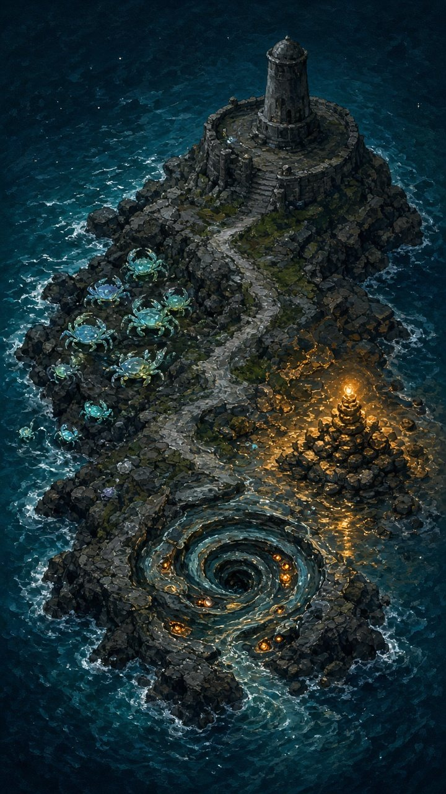

Amplify
Lume
A maré de vidro sobe. A lanterna atira sozinha. História, modos, infinito e ranque. Arraste o dedo para andar.
Amplify
A maré de vidro sobe. A lanterna atira sozinha. História, modos, infinito e ranque. Arraste o dedo para andar.
Versões

Mapa
A lanterna pede um reforço